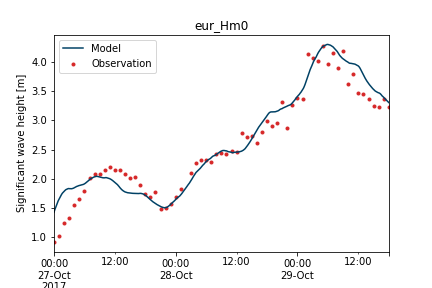
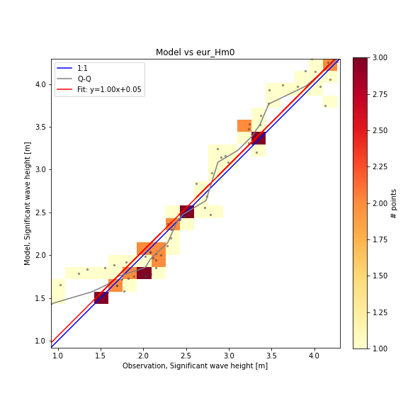

Simple time series comparison
If all you need to do is to compare two point time series, the workflow is very simple and described below. The general many-to-many comparison is decribed in the getting started guide.
Workflow
The simplified modelskill workflow consists of these four steps:
- Specify model result
- Specify observation
- match()
- Analysis and plotting
1. Specify model result
The model result can be either a dfs0 or a DataFrame.
2. Specify Observation
The observation can be either a dfs0, a DataFrame or a PointObservation object.
3. match()
The match() method will interpolate the modelresult to the time of the observation and return an object that can be used for analysis and plotting
4. Analysis and plotting
The returned Comparer can make scatter plots, skill assessment, time series plots etc.

